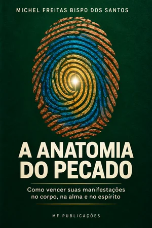
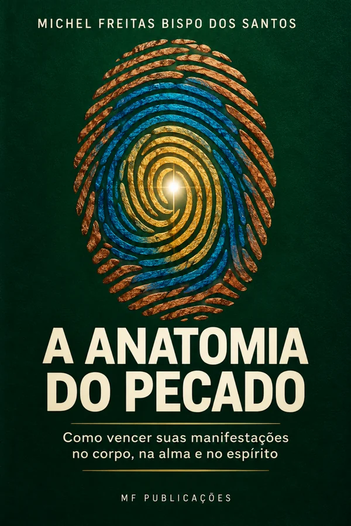

Corpo
O corpo como templo e não como brinquedo: vícios, compulsões, autossabotagem, a idolatria do prazer e a pureza que liberta.
Para o cristão que já orou, já confessou, já prometeu que seria a última vez — e continua caindo no mesmo ciclo.

Pagamento seguro pela Kiwify · Acesso enviado por e-mail após a confirmação
Resistir, cair, sentir culpa, confessar e tentar novamente pode se transformar num ciclo. A pergunta que muda a batalha é: o que está alimentando essa manifestação?
Um diagnóstico errado pode fazer você lutar com intensidade no lugar errado.
Este livro parte de 1 Tessalonicenses 5:23 — fomos criados corpo, alma e espírito — para mostrar que cada dimensão tem suas próprias vulnerabilidades. E que tratar todas do mesmo jeito é uma das razões de tanta gente sincera viver uma santidade fragmentada.
QUERO O E-BOOK POR R$ 24,90São três partes, uma para cada dimensão do ser humano — com análise bíblica, narrativas ilustrativas e aplicação prática em cada capítulo.
O corpo como templo e não como brinquedo: vícios, compulsões, autossabotagem, a idolatria do prazer e a pureza que liberta.
A alma ferida que peca para se proteger: ira, inveja, ciúmes, amargura, a mente como campo de batalha e a vontade que escolhe errado mesmo sabendo o certo.
Os pecados mais sutis: incredulidade, rebelião, espiritualidade de fachada e resistência ao Espírito Santo — e como o espírito regenerado governa a alma e o corpo.

“Milhares de cristãos sinceros vivem hoje o que poderíamos chamar de ‘santidade fragmentada’ – uma experiência espiritual onde certas áreas da vida parecem estar sob o controle de Deus enquanto outras permanecem em território inimigo. São pessoas que oram com fervor, mas explodem em ira por motivos banais. Que pregam sobre pureza, mas consomem conteúdo que contamina sua mente. Que falam sobre o poder do Espírito Santo, mas vivem na prática como se Deus fosse apenas uma teoria teológica distante de sua realidade cotidiana.”
— Introdução, A Anatomia do Pecado
Prefácio · Introdução · 3 partes · Conclusão
O objetivo não é ensinar você a esconder melhor uma luta. É lançar luz sobre aquilo que precisa ser compreendido, confrontado e transformado — e viver a santidade não como um fardo religioso, mas como fruto de quem foi restaurado por Deus.
“O pecado revelado para ser vencido.”
Membro da Assembleia de Deus desde 5 de abril de 1998, Michel entendeu, ainda nos primeiros anos de caminhada, que seu chamado era o ensino. Serviu como líder de jovens e professor da Escola Bíblica Dominical, tocou e cantou na banda, no quarteto e no coral da igreja (voz de baixo) e tornou-se diácono.
Em 2020, ao conhecer o ensino da fé de Kenneth E. Hagin, voltou-se com nova seriedade às Escrituras e à prática de suas verdades — tempo marcado por longos jejuns e por experiências de libertação, cura e milagres, para a glória de Deus. Este livro reúne o que aprendeu nessa jornada, para ajudar outros cristãos a viverem livres.
“Disciplina hoje. Liberdade sempre.”
Compra protegida. Em compras on-line, o Código de Defesa do Consumidor (art. 49) garante o direito de arrependimento em até 7 dias a partir da compra.
Em PDF, com 237 páginas e 21 capítulos. Não é livro impresso.
Sim. O PDF abre no celular, no tablet ou no computador, em qualquer leitor de PDF.
A compra é feita pela Kiwify. Assim que o pagamento é confirmado, você recebe no e-mail informado no checkout o acesso ao e-book. No Pix e no cartão a confirmação costuma ser rápida; no boleto, pode levar alguns dias úteis. Confira também a caixa de spam ou promoções.
Pix, boleto ou cartão de crédito. O valor é R$ 24,90 à vista; no cartão também é possível parcelar, com acréscimo de juros da plataforma.
Em compras pela internet, o Código de Defesa do Consumidor (art. 49) garante o direito de arrependimento em até 7 dias a partir da compra. A solicitação é feita junto à Kiwify, a plataforma que processa o pagamento.
Não. É uma obra de ensino bíblico. Situações de dependência, sofrimento emocional ou risco pessoal devem ser acompanhadas por profissionais qualificados e por uma liderança pastoral responsável.
Responda ao e-mail de compra da Kiwify ou fale com a MF Publicações pelos canais no rodapé desta página.
Discernir a raiz muda a forma de enfrentar o ciclo.
QUERO O E-BOOK POR R$ 24,90PDF · 237 páginas · acesso por e-mail após a confirmação